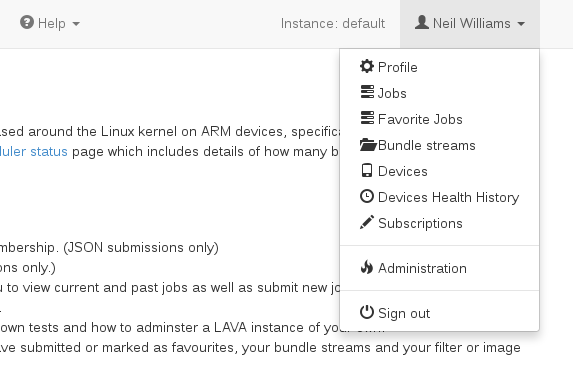

Caution
Do not rush. Always start with QEMU testing, then add a
real device which is well supported by LAVA. Purchase and integrate one of
the standard known devices. Take time to
learn what is required to automate a DUT. Avoid rushing into adding
your own new device type. When you have a LAVA instance which has
successfully run a few dozen test jobs using QEMU and a standard known
device, then consider how to integrate a new device-type into LAVA.
You need to be familiar with these sections:
The django admin interface is a core component of the django framework. Elements can be added for particular implementations but, fundamentally, the operation of the interface is the same as other django sites. The appearance of the menu is determined by the version of django installed on your system. The style changed substantially in django 1.9, so images of the interface itself are not included here.
Changes within the administration interface and changes made as a superuser through the UI are tracked through the History elements of objects in the database. When viewing a specific element (for example a single Test Job or a single Device), click on the History link to view all changes relating to that element. There is also a link back to the UI view of the same element.
Note
the organization, layout and content of the django administration interface is subject to change with upgrades to django itself and these changes are outside the control of LAVA.
The django administrative interface offers links back to your LAVA instance
if the Sites element is modified. (The default django value is
example.com.) Navigate to the Sites element in the administrative
interface and modify the domain name and display name. Once complete, links
like View site and the View on site button on certain pages of the
interface will link to the correct location in your LAVA instance.
It is tempting to jump straight in with your one-off special device which nobody else has managed to automate yet but a fresh install needs to be tested with a known working configuration. Setting up known working devices and learning how to modify the first job is essential to deciding how to best configure a new device. It is also recommended to setup another known device type which is similar to the device you want to add as there are different steps required for certain types of device.
This first QEMU device can be configured on the existing worker which is always available on the master. Subsequent devices can be added to other workers and devices can be shuffled between workers, subject to limitations of physical connections.
QEMU is always recommended as the first device to be set up on any LAVA instance for a few reasons:
Prior to adding any devices, admins should add suitable device types to the database. The device type name should match a jinja2 template file in:
/etc/lava-server/dispatcher-config/device-types/
If an existing template does not exist, a new template will need to be created.
See also
You can then either use the web admin interface
or the lava-server command line to add device types.
Using the admin interface
In order to use the web admin interface, log in to the LAVA instance and click on your username to see the Profile menu.
The django administrative interface is accessed from the Administration
link in the profile menu.
LAVA_SCHEDULER_APP.Device typesJust before you add the device type, take a look at the available elements of a device type:
The only value needed for the QEMU device type is the Name, just check that Display is the default: enabled. Now Save.
Using the command line
On the command line, you can add device types (for instance QEMU and panda) using:
lava-server manage device-types add qemu
lava-server manage device-types add panda
It’s also possible to add all known device types at the same time with:
lava-server manage device-types add '*'
Descriptive fields like Architecture name, Processor name, CPU model
name, List of cores and Bit count cannot be set on the command line.
Using the command line interface it’s also possible to list all known device types:
lava-server manage device-types list --all
Using the admin interface
LAVA_SCHEDULER_APP and select Devices and
Add Device.Pipeline device.Using the command line
Using the command line interface it’s also possible to list all known device types:
lava-server manage device-types list -a
On the command line, you can add device types (for instance a QEMU type device
with a hostname qemu01) using:
lava-server manage devices add --device-type qemu --worker <worker> qemu01
If a health check is already defined, the device will start
running a health check immediately. Alternatively, specify the
offline option to set the initial state:
lava-server manage devices add --offline --device-type qemu --worker <worker> qemu01
It is also possible to copy an existing device as a new device with a new hostname.
# copy existing qemu01 to a new qem02
lava-server manage devices copy qemu01 qemu02 --worker <worker> --offline
See lava-server manage help devices for more options.
For the first device, a simple device dictionary can be used to provide the device-specific details on top of the template:
{% extends 'qemu.jinja2' %}
{% set mac_addr = '52:54:00:12:34:59' %}
{% set memory = '1024' %}
The device dictionary must extend an existing template.
The architecture (arch value) is not set in this device dictionary. This
allows this device to run test jobs using files for any architecture
supported by QEMU.
See also
The MAC address needs to differ for each device of this type across all instances on the same subnet.
The available memory for the virtual machine is set in megabytes. This can be changed later to balance the requirements of test jobs with performance on the worker.
Line ordering within the device dictionary is irrelevant, although it is
common to put the extends line first when storing the dictionary as a
file.
The template itself lives in:
/etc/lava-server/dispatcher-config/device-types/qemu.jinja2
This dictionary does not include a setting to use a tap device which means
that this device would not support a hacking session inside the virtual
machine. Setting up a bridge is out of scope for this documentation.
See also
Creating a device dictionary for the device to export and modify a device dictionary, Updating a device dictionary to import a device dictionary into the database for use with a new or existing device, Checking your templates for help with types of devices other than QEMU and Device type templates for help with how the device dictionary works with the device-type templates.
Once updated, the device dictionary is added to the Device view in the administrative interface under the Advanced Properties section at the base of the page.
The core principles remain the same as for QEMU, the main differences are in the way that the device dictionary is needed to provide a wider range of settings covering power control, serial connections, network details and other values.
See also
Writing Health Checks for devices - each time a new device type is added to an instance, a health check test job needs to be defined.
See also
Growing your lab, including How many devices is too many for one worker?.
Templates usually exist for known device types because an existing instance is using the template. Often, that instance will be Linaro’s central validation lab in Cambridge which is accessible via https://validation.linaro.org/ .
The contents of the device dictionary for particular devices are visible to anyone with access to that device type, using the device detail page. Details of the jinja2 files used to update the device dictionary on Linaro instances is also held in git:
https://git.linaro.org/lava/lava-lab.git
The structure of the device dictionary files will be similar for each device of the same type but the values will change. An example for a beaglebone-black device looks like:
{% extends 'beaglebone-black.jinja2' %}
{% set connection_command = 'telnet localhost 7101' %}
{% set hard_reset_command = '/usr/local/lab-scripts/snmp_pdu_control --hostname pdu15 --command reboot --port 11' %}
{% set power_off_command = '/usr/local/lab-scripts/snmp_pdu_control --hostname pdu15 --command off --port 11' %}
{% set power_on_command = '/usr/local/lab-scripts/snmp_pdu_control --hostname pdu15 --command on --port 11' %}
Note
It is recommended to keep the device dictionary jinja files under version control. The templates are configuration files, so if you modify the default templates, those need to be under version control as well.